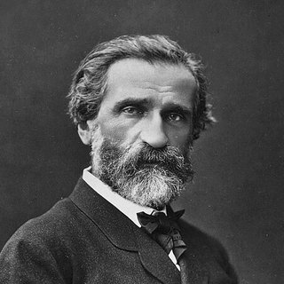

Композиторы › Джузеппе Верди

Джузеппе Верди
Самый любимый итальянский оперный композитор: его мелодии стали народными песнями по всему миру.
Жизнь
Родился в Ле-Ронколе под Буссето (Парма), в семье трактирщика. Научился играть на органе деревенской церкви и благодаря поддержке буссетского торговца Антонио Барецци смог учиться в Милане.
В 1832 году его не приняли в Миланскую консерваторию, которая сегодня носит его имя. После трудных лет успех пришёл в 1842 году с оперой «Набукко» и хором «Va, pensiero».
Затем появились шедевры «Риголетто», «Трубадур», «Травиата», «Аида», «Отелло» и «Фальстаф». Умер в Милане в 1901 году: когда его прах переносили в окончательную усыпальницу, большой хор под управлением Артуро Тосканини исполнил «Va, pensiero» перед огромной толпой.
Портрет: Ferdinand Mulnier (c. 1872), общественное достояние, источник — Викисклад.

Интересные факты
- «Травиата», сегодня одна из самых исполняемых опер в мире, провалилась на премьере в 1853 году в венецианском театре «Ла Фениче».
- «Застольная» («Libiamo ne' lieti calici») — праздничная песня из первого действия, в ритме вальса.
- Он основал в Милане Дом отдыха для музыкантов, где и похоронен, и завещал ему доходы от своих опер.
За фортепиано
- Думай о голосе певца: мелодия должна дышать в конце каждой фразы.
- «Застольная» — на три доли: лёгкий акцент на первую, две другие тише.
- Играй с размахом и радостью: это праздник.
Пьесы для разучивания 1 пьеса

Выучите её нота за нотой с Piano Learning
В режиме «Ждать ноту» пьеса останавливается, пока вы не нажмёте нужную клавишу — на телефоне или на своём пианино (приложение вас слушает). Руки по отдельности, скорость от 10 %, ноты всегда перед глазами.
Бесплатно, как «Кампанелла», Турецкий марш, Jingle Bells и «Братец Яков». Сотни других пьес — одной покупкой, без подписки.